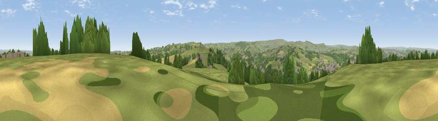

Farnley Moor
#13147 in England · top 17% of its area beats it · near BrockholesThe view, rendered

A 360° render of this exact spot computed from the terrain model, tree cover and land cover — summer colours, afternoon light, calibrated against photographs of famous viewpoints. Real trees, hedges and buildings will differ in detail.
The panorama
Grey silhouette: terrain skyline in each direction (720 bearings, Earth curvature and refraction included). Dashed green: skyline with trees (+15 m) and buildings (+8 m) as obstacles. Blue strip: how far the ground is visible on each bearing.
Where the view opens
Wedge length = distance to the farthest visible ground on that bearing (vegetation-aware). Rings at 10, 25 and 50 km.
What fills the view
56% grassland · 29% woodland · 11% built-up · 4% cropland
Angular shares of the visible panorama (visual magnitude), not map area. Landscape diversity 0.46 (0–1 Shannon).
Key numbers
More beautiful places nearby
The staircase of upgrades: each row has a higher view potential than everything closer. Driving times are estimates from straight-line distance, calibrated against real road routing — check an actual route before setting out.
| Place | Direction | Drive | Score |
|---|---|---|---|
| Viewpoint near Thurstonland | SSE · 2 km | ~4 min | 66.8 |
| Castle Hill | NNW · 3 km | ~7 min | 70.2 |
| Viewpoint near Jackson Bridge | SSE · 5 km | ~10 min | 73.5 |
| Viewpoint near Greenfield | WSW · 18 km | ~31 min | 76.0 |
| Viewpoint near Carrbrook | SW · 21 km | ~35 min | 77.1 |
| Viewpoint near Otley | N · 33 km | ~51 min | 77.5 |
| Darwen Hill | WNW · 49 km | ~70 min | 80.7 |
| White Brow | W · 50 km | ~71 min | 82.9 |
53.60074, -1.75819 · source: dobih hill · position refined by local search. Computed location — check access rights before visiting.